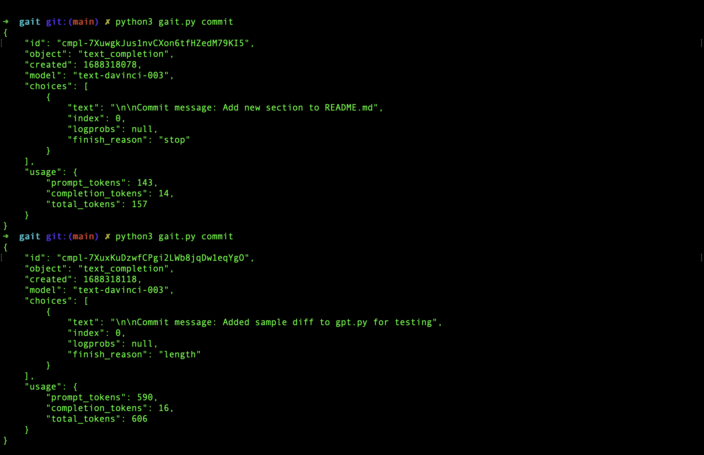
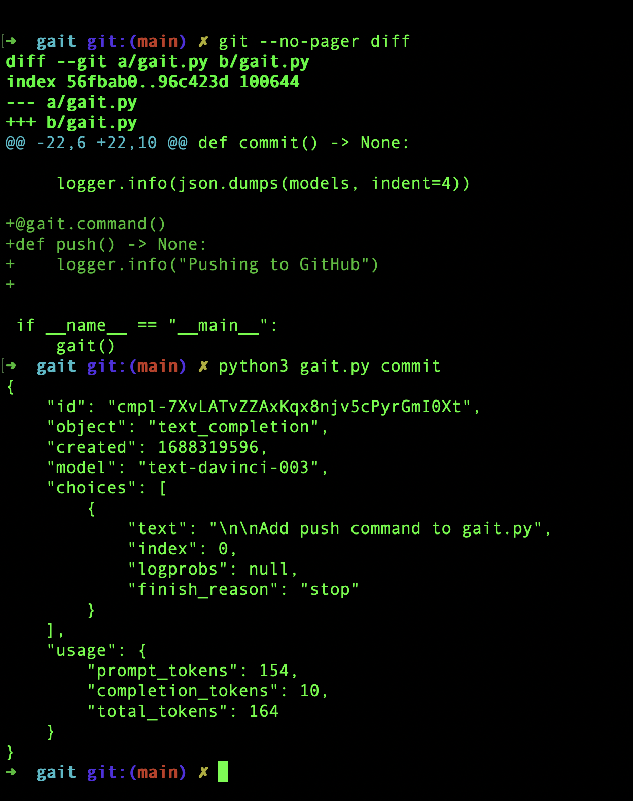
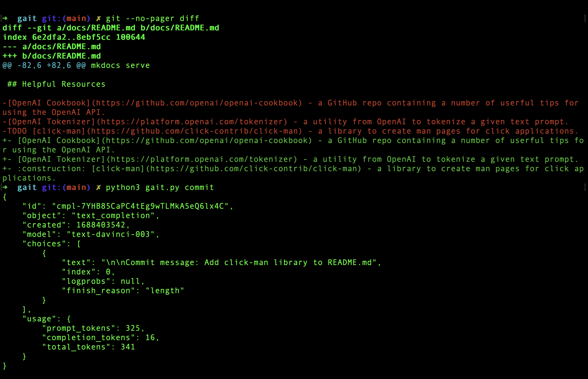
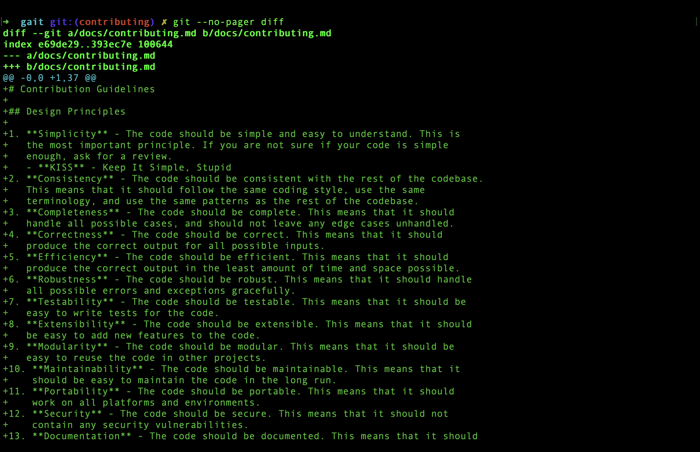
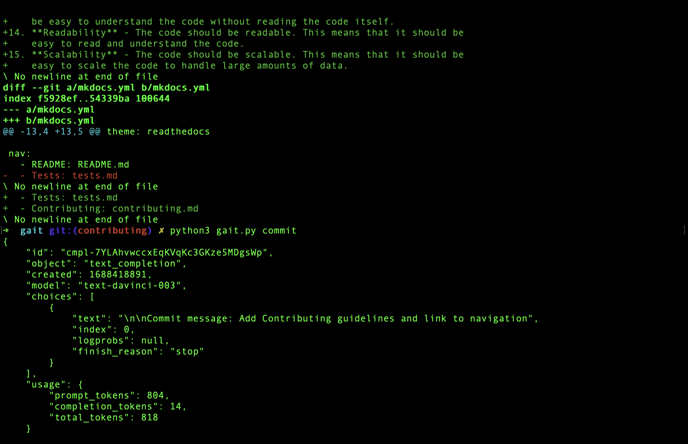
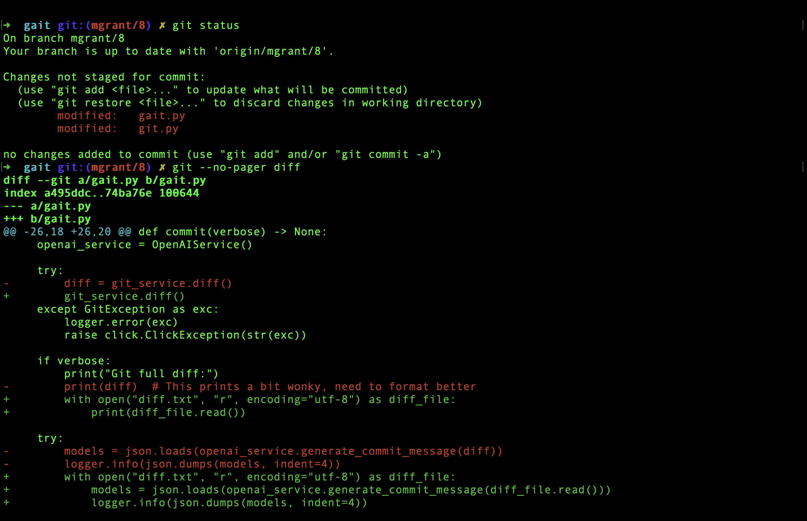
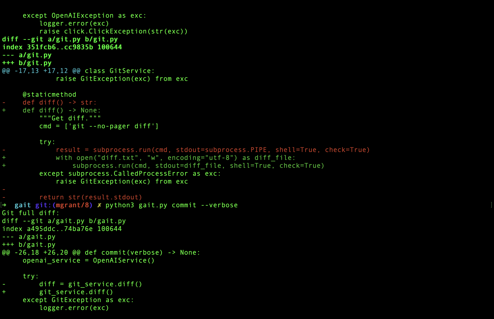
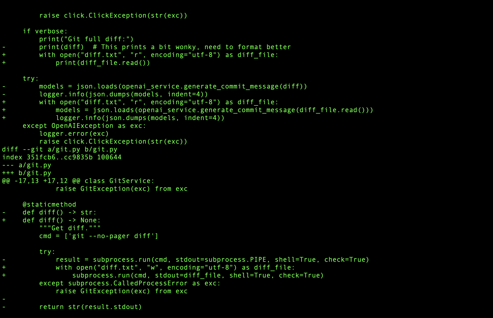
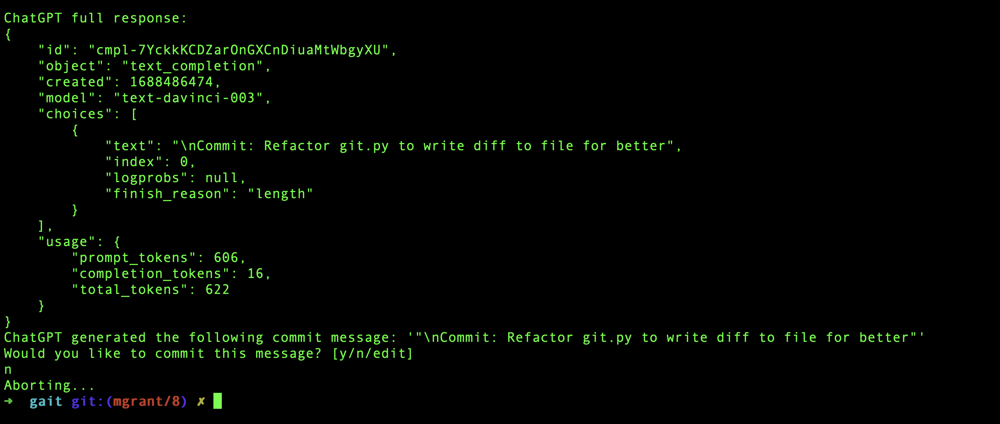
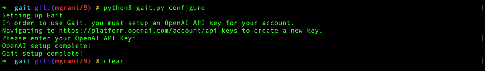

Tests
This page is a dumping ground for any tests that you run and their results. Please try to include as much configuration context as possible to ensure consistency across test runs.
Test Run 1

Comparing sample diff to real git diff in working directory.
Test Run 2

Another example of a real git diff and the commit message written by ChatGPT.
Test Run 3

Subtle changes are not well-recognized. Need to tweak the propmpt or train the model somehow.
Test Run 4
 
New files and additions to existing files are well handled.
Test Run 5
 
Note that formatting of the diff is correct, but consider adding syntax highlighting for clarity.
 
Note that the commit message is correct, but the finish_reason is length even though we are no where close to the token limit. Need to research this further. Demo run through of the flow for #8
Test Run 6

Demo run through of the flow for #9